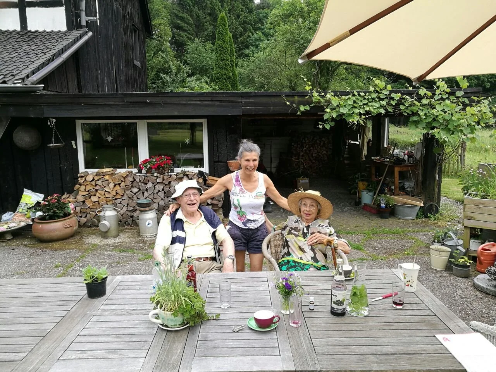

Betreuung und
Begleitung im
Alltag
Für Senioren und Menschen
mit Behinderung
"Alles begann mit Thomas. Als mein Bruder
an MS erkrankte, erlebten wir am eigenen
Leib, was es heißt, auf Hilfe angewiesen zu
sein. Wir wollten keine sterile
"Verwahranstalt", sondern Menschlichkeit,
Respekt und Würde. Weil wir das nicht
fanden, gründeten wir 2015
einfachmehrvomLeben e.V."

Jan Daniel Fischer,
Gründer
Brigitte Lemaire,
Gründerin
Was wunderbare Menschen über unsere Begleitung sagen
„Hier wird wahre Menschenarbeit geleistet, sich auf Augenhöhe
begegnet – ohne Profitgier und Zeitdruck. Im Rahmen meiner Arbeit
habe ich diesen Verein mit ins Boot geholt. Eine wunderbare
Unterstützung! Meine Klienten fühlen sich wertgeschätzt und in ihren
Wünschen und Bedürfnissen gesehen. Der Austausch ist freundlich,
kollegial, immer herzlich und oft humorvoll. Danke dafür.“

Alltagsbegleitung
Unterstützung im Haushalt,
gemeinsames Kochen, Begleitung
zum Arzt und mehr
Demenzbegleitung
Stundenweise Entlastung für
pflegende Angehörige mit
Bezugsperson
Sterbe- & Trauerbegleitung
Ein fester Anker für Betroffene und
Familien in schweren Zeiten
einfachmehrvomLeben e.V. ist anerkannt:
✓ nach Landesrecht NRW zur Alltagsbegleitung/Betreuung der Paragrafen 36/39/42/42a/45a/45b.
✓ vom Landschaftsverband Rheinland für den Rheinisch Bergischen Kreis und die Erbringung von Assistenzleistung nach dem SGB IX.
Kostenübernahme oder private Finanzierung?
Viele Betroffene und Angehörige fragen sich, wie sie eine würdevolle Begleitung finanzieren können. Als Ihr
persönlicher Co-Pilot lassen wir Sie im Bürokratie-Dschungel nicht allein und prüfen gemeinsam, welche
Budgets der Pflegekasse Sie nutzen können. Für ein Höchstmaß an Lebensqualität bieten wir zudem unsere
Assistenz für Selbstzahler an – auch gänzlich ohne Pflegegrad.
Ihr Vorteil als Privatzahler:
Sie genießen wertvolle Zeit ohne Stoppuhr, flexibel und unabhängig.
Ob Kassenabrechnung oder private Aufstockung, wir helfen Ihnen von Herzen,
das passende Modell zu finden.
Lernen Sie uns kennen
Einen geliebten Menschen in unterstützende Hände zu
geben oder selbst Hilfe anzunehmen ist vor allem eines:
Vertrauenssache.
Deshalb beginnt unsere Begleitung immer mit einem ruhigen
persönlichen Kennenlern- Gespräch.
Erzählen Sie uns von Ihrer aktuellen Situation in
Königswinter, Bad Honnef, Bonn oder Umgebung. Brigitte
Lemaire und Jan-Daniel Fischer melden sich persönlich bei
Ihnen zurück.
Nutzen Sie dazu gerne das Kontaktformular einen Schritt
weiter unten oder rufen Sie uns direkt an:
Tel. 01520 – 34 66 890 oder 0160 - 96 89 30 85
E-Mail: einfachmehrvomleben@web.de